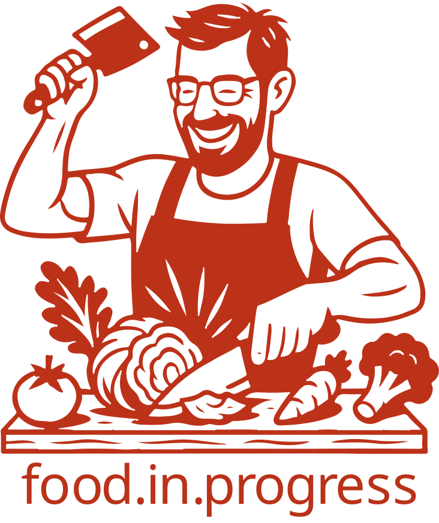

In der heutigen schnelllebigen Welt, in der Zeit ein kostbares Gut ist, bieten wir Ihnen frisch zubereitete, hausgemachte Mahlzeiten bequem nach Hause oder ins Büro – eine gesunde, hochwertige und köstliche Alternative zu gekauften Sandwiches und ungesunden Fertiggerichten.
Mit frischen, regionalen Zutaten und viel Liebe zum Detail bereiten wir jede Mahlzeit sorgfältig und schonend für Sie zu. Dabei legen wir größten Wert auf Qualität, Natürlichkeit und ausgewogene Rezepturen. So genießen Sie ehrliche, hausgemachte Küche voller Geschmack – ganz ohne künstliche Zusätze und Kompromisse.
Unsere Gerichte erinnern an die vertrauten Aromen aus Omas Küche – mit traditionellen Rezepten, frischen Zutaten und viel Sorgfalt zubereitet. Wir verbinden bewährte Hausmannskost mit moderner Effizienz, damit Sie echte, hausgemachte Qualität genießen können, auch wenn der Alltag kaum Zeit zum Kochen lässt.
Bevor er den Kochlöffel schwang, arbeitete unser Küchenchef viele Jahre als Architekt und gestaltete Gebäude mit Liebe zum Detail und klarer Vision. Heute überträgt er seine Erfahrung aus der Architektur auf die Küche: Jedes Gericht plant er mit Präzision, ästhetischem Gespür und Kreativität, sodass Geschmack, Optik und Harmonie perfekt zusammenspielen.